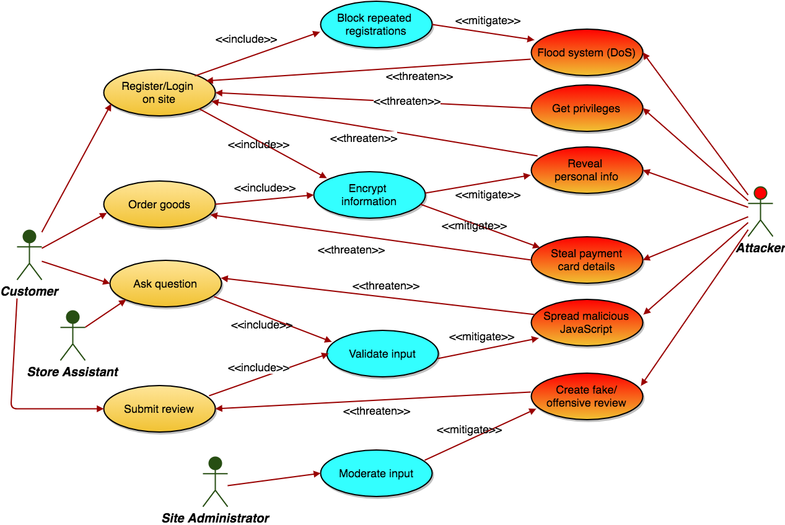

Objectives
The focus of this lab is the first part of the security assignment -- threat modelling
This is broken down into the following steps:
- Specify requirements for a web application development scenario
- Define normal use cases
- Define abuse cases
- Augment the requirements and use cases in (a) & (b) to mitigate the threats identified
Threat modelling using misuse cases
Several software vulnerabilities are caused by poor specification of requirements, poor design and/or poor testing rather than specific programming flaws. It is important to consider security at all stages of the software development lifecycle.
For the purpose of the assignment, you are asked to specify and analyse requirements for a software system of your choice. Besides specifying basic functionality, you should concentrate on security requirements and use threat modelling to help put together those requirements. In particular you should specify what are known as misuse cases (also called abuse cases).
Requirements
Specify requirements for a software system of your choice. Make sure that it is simple enough to be specified fully in one or two pages of requirements, but sophisticated enough to be interesting – i.e. there should be at least two different types of user (actors); there should be a variety of functions, some of which are restricted to certain users; some of the functions should be multi-step (for example, a transaction might combine an order function with a payment function). You may think in terms of an application you have developed yourself (perhaps enhanced a bit) or something completely different.
This should be done in text, using bulleted or numbered lists as appropriate.
Some application ideas (but feel free to choose your own!)
- Online donations
- Online community (social network)
- Online shop
- Sports club (booking facilities)
- Hotel
- International student application system
- Garage (booking a car service)
- Bank ATM
- Event ticket sales
- Microblogging (like Twitter)
- Online auction
- Sports event registration (e.g. marathon)
- Library
- Courier service (DHL, FedEx, Parcel Motel, etc)
- Pay per view TV
- Take away food ordering system
- Employee timekeeping (clocking in/out etc)
- Student exam results system
- Art gallery
Define normal use cases
This requires you to define the (benign) actors and how they interact with the system.
For a good concise description of Use Cases, see this extract from UML Distilled, by Martin Fowler.
Note that use cases are not just diagrams. They require a diagram plus a description (according to a standard template).
You can use any drawing tool you wish for use case diagrams. The in-browser drawing tool draw.io is free, convenient and suitable for our needs. You can find Use Case artifacts in the "UML" section of draw.io. If you prefer to use a more sophisticated professional tool, Visual Paradigm is also recommended.
- Misuse cases + mitigation example that you can open in draw.io (Right-click to download XML file)

Define misuse cases
Define a selection of misuse cases using diagrams and supporting text. This will likely involve some new actors. You might wish to consider both external and internal attackers.

Mitigation
Augment the requirements and use cases to mitigate the threats posed by the misuse cases.
